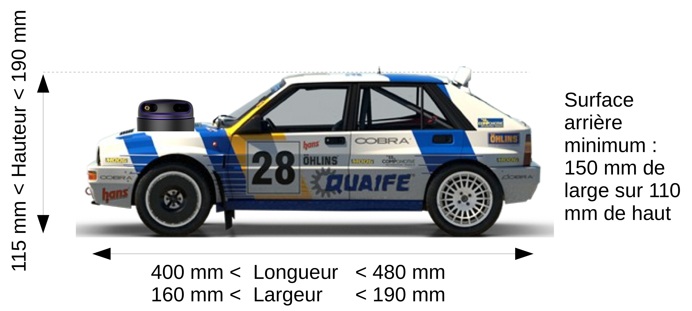

Regulations for the Paris Saclay Autonomous Car Race
This regulation evolves from year to year, feel free to add your contributions.
The Vehicle
The vehicle must use a Tamiya TT02 chassis/motor kit and a maximum 7.2V 5000 mAh NiMH battery. It must have a body covering more than 80% of its surface (value estimated by the jury in a somewhat unscientific manner...). The vehicle, including all its sensors and actuators, must fit within the dimensions below:

The car must be visible to following vehicles: It must display at the rear at least one solid rectangle measuring 150 mm wide and 110 mm high. Only a small gap (< 10 mm high), for the vehicle's ground clearance, is accepted. Transparent bodies or those with primary colors green, red, or gray are not allowed. A test with a RP-Lidar A2M8 validates the visibility of the back of the car. In the event of non-detection (some black paints absorb infrared), broken white tape will be added to the rear of the car.
It is possible to remove the front wheel drive to improve the turning radius at the cost of traction.
The car must be able to operate in both forward and reverse.
To improve the steering mechanics, it is possible to replace some plastic parts with commercially available aluminum parts (Yeah Racing TATT-S03BU available notably at Rcmart.com or Tamiya kit 54574 sold at Conrad). Any significant modification of the chassis (beyond a few drillings) must be submitted for approval by the other schools participating in the race. The submission must include references or plans of the proposed modifications.
The team's communication with the vehicle must be limited to sending a start signal and a stop signal. The vehicle may send information back to the team (Telemetry). Sending commands that alter the vehicle's behavior will lead to the team's disqualification.
A secondary battery for electronics is allowed. Powering the motor with a voltage higher than the battery voltage is not allowed.
A typical car is offered as a kit (see the Typical Car menu).
The Track
The shape of the track is not known until the day of the competition. Providing information about the track's shape to the car is prohibited. Referees may request verification of this on a secondary track, for example. The car can learn the track during its first laps.
The track consists of 200 mm high curbs, green on the right side in the direction of travel and red on the left. These curbs will be made up of straight elements and arcs of circles with a curvature radius of R=400mm or more. The ground is gray linoleum. The track is at least 800 mm wide at all points but may contain obstacles inside.
A continuous white marking 19 mm high has been added from 2023 along the curbs to facilitate visibility. A dashed line is planned in the middle.
Color references are as follows: * GREEN: V33 multi-support satin Comptoir des couleurs colorants ZT 131,46 mL, XT 28,39 mL, TS 19,06 mL, LS 6,09 mL * RED: Madras Red satin cream Valentine (Leroy Merlin) * FLOOR: PVC Floor GERFLOR concrete effect leone anthracite l.4 m Ref 83309786 (Leroy Merlin) The layout is not known in advance.
Here is an example of one of the 2023 tracks:

A track kit is offered by CRIC.
Homologations
48 hours before the race day, teams must email a presentation of their car (poster, slideshow, video...): block diagram of the car, hardware specifications, navigation method, AI tools used,...
Homologation consists of validating the vehicle's elements (dimensions, battery, chassis, remote start and stop, color detectable by a lidar...) and verifying the vehicle's ability to move along a straight section of the track plus a turn without touching the curbs and to reverse in case of blockage against an obstacle and in the absence of a vehicle behind.
An homologation with penalty is possible, by all referees for minor infractions of the rules: a vehicle that does not start or stop or does so poorly at a distance, or does not operate in reverse, for example.
Qualifications
Qualifications are conducted one car at a time.
A first qualification takes place without obstacles on track A.
A second qualification occurs with fixed obstacles larger than the size of a car, on track B.
For each qualification, the car makes 2 laps. For each qualification, the car has 2 attempts, and the best of the 2 times is retained, to address any technical issues that may arise during the first attempt.
If the car fails to complete the 2 laps, a time of 120 seconds is recorded.
The result, the sum of the times from the 2 qualifications, determines the starting grid, with the fastest car starting in pole position. The top 6 cars start for race 1, the next 6 for race 2, for each heat.
The Race
Teams have 3 minutes to set up their vehicle on the track.
All vehicles are positioned on the starting grid according to the qualification results. Once all teams have announced they are ready, touching the vehicles is prohibited. The start signal is given orally by the referee. The finishing order is recorded after a predetermined number of laps (5 by default). A car that does not finish the defined number of laps is not ranked.
A vehicle cannot exhibit overtly aggressive behavior towards opposing vehicles. A car cannot intentionally prevent another from overtaking.
The referee may disqualify such a vehicle and remove it from the track.
The referee or one of their assistants removes a vehicle that is immobilized on the track for more than 10 seconds in the absence of another car blocking it. The same applies to a vehicle that has traveled more than 2m in the wrong direction.
2 heats take place (a heat may consist of several races). Points are awarded as follows: 1st 25 pts; 2nd 18 pts; 3rd 15 pts; 4th 12 pts; 5th 10 pts; 6th 8 pts; 7th 6 pts; 8th 4 pts; 9th 2 pts; 10th 1 pt;
In case of a tie, qualification times are taken into account.